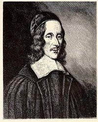
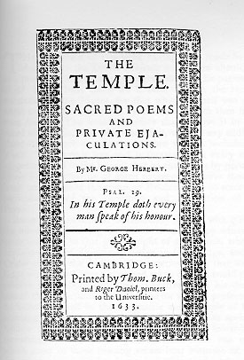

The 20th-century tune used here is
among the few to honor the intention of the author, a 17th-century
Anglican pastor and poet, to sing the refrain before, between, and after
the two stanzas. The mention of “psalms” in the second stanza is a clue
that hymns were not yet common.
1 Let all the world in ev'ry corner sing,
"My God and King!"
The heav'ns are not too high,
God's praise may thither fly;
the earth is not too low,
God's praises there may grow.
Let all the world in ev'ry corner sing,
"My God and King!"
2 Let all the world in ev'ry corner sing,
"My God and King!"
The church with psalms must shout:
no door can keep them out.
But, more than all, the heart
must bear the longest part.
Let all the world in ev'ery corner sing,
"My God and King!"
LX1787Let All The World In
Every Corner Sing023普天下都来颂扬
颂新
Short Name:
George Herbert
Full Name:
Herbert, George, 1593-1633
Birth Year:
1593
Death Year:
1633
Herbert, George,
M.A.,

the fifth son of Richard
Herbert and Magdalen, the daughter of Sir Richard Newport, was born at his
father's seat, Montgomery Castle, April 3, 1593. He was educated at
Westminster School, and at Trinity College, Cambridge, graduating B.A. in
1611. On March 15, 1615, he became Major Fellow of the College, M.A. the
same year, and in 1619 Orator for the University. Favoured by James I.,
intimate with Lord Bacon, Bishop Andrewes, and other men of influence, and
encouraged in other ways, his hopes of Court preferment were somewhat bright
until they were dispelled by the deaths of the Duke of Richmond, the Marquis
of Hamilton, and then of King James himself. Retiring into Kent, he formed
the resolution of taking Holy Orders. He was appointed by the Bishop of
Lincoln to the Prebend of Lcighton Ecclesia and to the living of Leighton
Bromswold, Hunts, July 15, 1626. He remained until 1629, when an attack of
ague obliged him to remove to his brother's, house at Woodford, Essex. Not
improving in health at Woodford, he removed to Dantsey, in Wiltshire, and
then as Rector to Bemerton, to which he was inducted, April 26, 1630, where
he died Feb. 1632. The entry in the register of Bemerton is "Mr. George
Herbert, Esq., Parson of Foughleston and Bemerton, was buried 3 day of March
1632."
His life, by Izaak
Walton, is well known; another Memoir, by Barnabas Oley, is forgotten.
Herbert's prose work,Priest to the Temple,
appeared several years after his death: butThe Temple,
by which he is best known, he delivered to Nicholas Ferrar (q.v.), about
three weeks before his death, and authorized him to publish it if he
thought fit. This was done iu 1633. The work became popular, and the
13th edition was issued in 1709. It is meditative rather than hymnic in
character, and was never intended for use in public worship. In 1697 a
selection fromThe Templeappeared
under the titleSelect Hymns Taken out of Mr. Herbert's
Temple & turned into the Common Metre To Be Sung In The Tunes Ordinarily
us'd in Churches. London, Parkhurst, 1697. In 1739, J. & C. Wesley
made a much more successful attempt to introduce his hymns into public
worship by inserting over 40 in a much-altered form in theirHymns
& Sacred Poems. As some few of these came into their collection ofPsalms
& Hymns, 1741, revised 1743, they were long sung by the Methodists,
but do not now form part of theWesleyan Hymn Book.
No further attempt seems to have been made to use theTemplepoems
as hymns until 1853, when some altered and revised by G. Rawson were
given in theLeeds Hymn Bookof that
year. From that time onward more attention was paid to Herbert alike by
Churchmen and Nonconformists, and some of his hymns are now widely
accepted. Many editions of his works have been published, the most
popular being that of the Rev. Robert Aris Wilmott, Lond., Geo.
Routledge & Son, 1857; but Dr. Grosart's privately printed edition
issued in hisFuller Worthies Libraryin
1874, in three volumes, is not only the most complete and correct, but
included also his psalms not before reprinted, and several poems from a
ms. in the Williams Library, and not before published. TheTemplehas
also been pub¬lished in facsimile by Elliott Stock, 1876, with preface
by Dr. Grosart; and in ordinary type, 1882, by Wells Gardner, with
preface by J. A. Shorthouse.
The quaintness of
Herbert's lyrics and the peculiarity of several of their metres have been
against their adoption for congregational purposes. The best known are: Let
all the world in every corner sing"; "My stock lies dead, and no increase";
"Throw away Thy rod"; "Sweet day, so cool, so calm"; and "Teach me, my God,
and King." [William T. Brooke]
--John Julian,Dictionary
of Hymnology(1907)
Notes
Let all the
world in every corner sing. G. Herbert. [Praise to God, the
King.] First published posthumously in hisTemple,
in 1633, p. 45, in the following form:—
"Antiphone.
"Chorus:Let all the world in ev'ry corner
sing,
My God and King.
"Verse:The heavens are not too high,
His praise may thither flie:
The earth is not too low,
His praises there may grow.
“Chorus:Let all the world in ev'ry corner
sing,
My God and King.
"Verse:The church with psalms must shout,
No doore can keep them out:
But above all, the heart
Must bear the longest part.
"Chorus:Let all the world in ev'ry corner
sing,
My God and King."
Although admirably
adapted for musical treatment, the original form of the text is not
popular with modern editors. We have the original in Thring'sCollection,
1882; and in theHymnary, 1872, the same, with the
addition of a doxology. Usually the text is rearranged, sometimes, as in
the Society for Promoting Christian KnowledgeChurch
Hymns, 1871; Horder'sCongregational Hymns,
1884, &c.; and again, in other collections in a different manner. This
hymn is also in common use in America.
A noted hymnologist,
McCutchan studied at Park College, Parkville, Missouri, and Simpson College,
Indianola, Iowa (BM 1904). He went on to teach voice at Baker University in
Baldwin, Kansas, and founded the conservatory of music there in 1910. After
further study in Germany and France, in 1911 he became dean of music at
DePauw University in Greencastle, Indiana, serving there 26 years. He helped
compile the Methodist Hymnal in 1936. His works include:
Better Music in Our
Churches, 1925
Music in Worship, 1927
American Junior and Church School Hymnal, 1928
The Deluge of New Hymnals (reprint from M.T.N.A. Proceedings, 1933)
American Church Music Composers of the Early Nineteenth Century, Church
History, September 1933
The Congregation’s Part in the Office of Music Worship (Northwestern
University, 1934)
Our Hymnody (New York: The Methodist Book Concern, 1937)
Aldersgate, 1738-1938, 1938
Hymns in the Lives of Men (New York: Abingdon-Cokesbury Press, 1943)
Hymns of the American Frontier, 1950
Hymn Tune Names: Their Sources and Significance, 1957
Sources:
Erickson, pp. 341-42
Hughes, p. 478
Hustad, pp. 284-85
McCutchan, p. 33
--http://www.hymntime.com/tch/bio/m/c/c/mccutchan_rg.htm, 03 July 2014.
“Let All the World in Every Corner Sing”
by George Herbert;
The United Methodist Hymnal, No. 93.
The poem with its original spelling and spacing appears as follows:
Cho.Let all the world in ev’ry corner sing,
My God and King.
Vers.The heav’ns are not too high,
His praise may thither flie:
The earth is not too low,
His praises there may grow.
Cho.Let all the world in ev’ry corner sing,
My God and King.
Vers.The church with psalms must shout,
No doore can keep them out:
But above all, the heart
Must bear the longest part.
Cho.Let all the world in ev’ry corner sing,
My God and King.
The life and literary work of the English poet George Herbert (1593-1633)
was contemporaneous with William Shakespeare (1564-1616) and John Milton
(1608-1674). Herbert received his education from and taught at Trinity
College, Cambridge. John Wesley reaffirmed Herbert’s most famous work,The
Temple(1633), which was published shortly after Herbert’s
death.

“Let all the world in every corner sing” is fromThe
Temple,and it appeared in the section “Christian Life”
under the title “Antiphon (I).”The
Templewas a very popular work, published in thirteen
editions between 1633 and 1679, a total of more 20,000 copies – an amazing
publication run in the mid-seventeenth century!
It is said that Herbert, on his deathbed at age 39, gave this collection of
religious poems to a friend to take to Nicholas Ferrar, a member of the
Anglican community at Little Gidding, with the following inscription:
“Tell him, he shall find in it a picture of the many spiritual Conflicts
that have past betwixt God and my soul, before I could subject mine to
the will ofJesus
my Master, in whose service I have now found perfect freedom;
desire him to read it: and then, if he can think it may turn to the
advantage of any dejected poor Soul, let it be made publick: if not, let
him burn it: forI
and it, are less than the least of God’s mercies.”
The title “Antiphon” is a distinct form. One definition states that it is “
a short sentence sung or recited before or after a psalm or canticle.” In
this case, however, hymnologist Richard Watson proposes a more literary
definition from theOxford
English Dictionary: “a composition in verse or prose, consisting of
verses or passages sung alternately by two choirs in worship.” The original
layout of the poem presented above better fits this definition.
Professor Watson, a scholar of English literature, notes a characteristic of
Herbert’s poetry: “. . . his emphasis on the heart: although the Church
sings (or “shouts”) psalms, it is the heart which must ‘bear the longest
past,’ continue the praise even longer that the Church does.”
King James I (1566-1625), who initiated the translation of the Bible
popularly known as the “King James Version,” respected Herbert and
considered appointing him an ambassador. The King died before these hopes
were fulfilled, so Herbert pursued his original career plans. Herbert was
ordained in 1626. Next he was appointed vicar, then rector, of the parish of
Bemerton and Fugglestone.
Herbert was strongly influenced by fellow metaphysical poet, John Donne
(1572-1631), a friend of the family. Their poetry was compared more recently
by T. S. Eliot (1888-1965), who found, in general, that Donne was more the
“orator,” while Herbert’s poetry was more intimate. This is perhaps evident
in another Herbert text inThe
United Methodist Hymnal, “Come, My Way, My Truth, My Life” (The
UM Hymnal, 164). The worldwide vision expressed in “Let All the World”
coincides with the expansion of the British Empire at the beginning of the
seventeenth century and the chartering of the British East India Company
(1601).
What are we to make of the lofty and dominant monarchial language – “God and
King” – in the twenty-first century? We cannot (or should not) rewrite
history. On the one hand, this language bears little connection to the
American experience and psyche. On the other hand, this hymn bears witness
to a part of the history of the Christian church. It is unlikely that we
will suspend the singing of the “Hallelujah Chorus” fromMessiah(1714)
by George Frideric Handel (1685-1759). The repeated “King of kings and Lord
of lords” (from Revelation 19:16) is unlikely to be modified by any church
musician for fear of significant reprisals. While not the preferred
characterization for God by many in this century, Herbert’s reference is one
of a wide range of ways to address the Deity … and it would be regrettable
to throw the proverbial baby out with the bath in such a magnificent
devotional expression.
The famous English composer, Ralph Vaughan Williams (1872-1958) helped to
bring “Let All the World in Every Corner Sing” back to public awareness when
he included it as the final movement of hisFive
Mystical Songs(1911) – all poems by George Herbert. First
published in the 1935 Methodist hymnal, the tune All the World was yoked to
this text by hymnal editor, Robert G. McCutchan – a pairing that continued
in the 1957 and 1966 Methodist hymnals.
Then, in 1960, hymnologist Erik Routley (1917-1982) set this text to its
present tune, AUGUSTINE. The tune is named for the Edinburgh parish,
Augustine-Bristo Congregational Church, where Routley served as minister
from 1959 to 1967, and it was first published inHymns
for Church and School(1964). Routley said, “The present
tune happens to be the only one in circulation which preserves the original
form of the text [antiphon, stanza, antiphon, stanza, antiphon].”
Following the age-old form of the antiphon, this setting sits in great
contrast to the many strophic (hymns written in poetic stanzas) hymns found
in the United Methodist tradition. Routley’s setting of Herbert’s text
exemplifies the majesty of the text. Between each robust proclamation of the
singing of God’s people to their “God and King,” Herbert writes of the
vastness of God’s creation and the greatness of God’s power.
This text is aptly placed toward the beginning of our hymnal among hymns of
praise and thanksgiving to God. Its triumphant message calls the world to
sing praise to our God and King. “The church with psalms must shout, no door
can keep them out.”
In this hurting, broken world, the church cannot stop proclaiming the good
news. People need to hear about Christ and the Christian life. People all
over the world, as well as those in our own neighborhoods, are yearning for
hope and healing. It is the message of reconciliation, grace, hope, and
Resurrection that we have to offer them. People all over the world need to
hear the gospel message. May all the world “in every corner sing”!
Written by Michael Hawn and Michelle Mizell Corazao, a graduate of the
Master of Sacred Music program at Perkins School of Theology, ‘06, Southern
Methodist University, where she was a student of Dr. C. Michael Hawn.C.
Michael Hawn is University Distinguished Professor of Church Music, Perkins
School of Theology, SMU.
An
antiphon, in Western
liturgical tradition, is a chant or musical setting intended as a
response to a psalm or canticle.
Antiphonal singing is a practice involving alternation between two
or more groups, or a soloist and a group. Both definitions involve one
thing responding to another. This hymn by
George
Herbert (1593–1633) seems to work with both definitions,
with its text labeled chorus
and verse, and in its
reference to singing psalms. Having only two verses (versicles,
stanzas), it is a brief text, yet it is effective. The first verse tells
how God is not too distant to hear the praises of his people; the second
describes the urgency of praise and the manner by which it should be
done—from the heart.
“Let all the world in every corner sing” was first published in
The Temple (1633 | Fig. 1).
Pastor J. Christopher Holmes summarized the message of Herbert’s poem:
Herbert’s text is a call to worship. All are constrained to acknowledge
God as creator and sovereign. The hymn’s instruction resembles the
imperative of Ps. 107:2, that those who are redeemed of God must declare
it. Certainly the praise of God’s people will reach him in the heavens;
he is not too distant. As well, as the church proclaims God’s glory,
their song will penetrate every barrier—“no door can keep them out.”
Herbert’s focus on the human heart is visible in the second stanza, for
the heart will continue to praise God throughout eternity.[1]
II. Tunes
1. LUCKINGTON
The tune most commonly associated with this text is LUCKINGTON by Basil
Harwood, from the Oxford Hymn
Book (1908 | Fig. 2). It is said to be named after the village in
Wiltshire, England. Harwood’s setting encapsulates the verses between a
chorus at the beginning and the end, similar to Herbert’s text, but
yielding a form of ABAABA, versus Herbert’s ABABA. The melody involves
some text painting. In stanza one, at “The heav’ns are not to high” and
“His praise my thither fly,” the melody rises upward, whereas in “The
earth is not too low,” the melody moves downward to its lowest point.
The affect of this on the second stanza is not quite the same but is
still intriguing. The wide range of the melody makes this tune
potentially challenging for average singers and small congregations.
Fig. 2.
Oxford Hymn Book
(Oxford: Clarendon Press, 1908).
2. AUGUSTINE
Another common tune setting is AUGUSTINE by
Erik
Routley (1917–1982), first published in
Hymns for Church and School
(London: Novello, 1964 | Fig. 3). Routley’s commentary on this tune was
published posthumously in Our
Lives Be Praise (1990), as follows:
AUGUSTINE . . . was the direct result of one of my then young children
expressing discontent with the tune we all knew for “Let all the world,”
so I facetiously remarked that I would try to replace that jubilant
piece with one in B-flat minor. What may be more important, however, is
that this is the only tune current in Britain that sets the poem as
George Herbert wrote it. Brent Smith of Lancing had composed one—and a
good one—for the school in this form, but it never travelled beyond the
school. . . . We used AUGUSTINE in the church after which it is named
[Augustine-Bristo Church] from about 1962 onwards; and when
Hymns for Church and School
(1964) was being prepared, and
John
Wilson remarked on the absence of tunes that preserved
George Herbert’s form, I sent him Brent Smith’s and mine; he and his
colleagues kindly chose mine. It was picked up by the 1973
Church Hymnary, but there a
boneheaded sub-editor altered it to the two-stanza form—an insult which
was corrected in the second printing after the damage had been done.[2]
Routley’s tune is more harmonically adventurous than other settings. The
phrase “My God and King” is an homage to the stirring choral treatment
by
Ralph
Vaughan Williams (1872–1958), from his
Five Mystical Songs (1911).
Fig. 3.Hymns
for Church and School(London: Novello,
1964), excerpt.
3. ALL THE WORLD
In
the United States, some Methodist and Southern Baptist hymnals have
relied on a tune by Robert G. McCutchan, ALL THE WORLD, written for
The Methodist Hymnal
(Nashville: Methodist Episcopal Church South, 1932 | Fig. 4). In the
original printing, the author was given as John Porter, but this was a
thinly veiled pseudonym, as the real author’s name was still credited
with the copyright at the bottom of the page. In his commentary for
Our Hymnody: A Manual of the
Methodist Hymnal (2nd ed., 1937), he wrote:
LET ALL THE WORLD was written especially for this hymn. Its meter is
peculiar, and other settings did not seem to make the right appeal.
Herbert called this poem “Antiphon,” and wished the congregation to sing
the first two lines as a chorus with the other four lines as a solo.
This setting, being in unison, lends itself admirably to that
treatment.[3]
In spite of his desire to be sensitive to the original text, the
antiphonal quality is not clear, since the entire setting is in unison,
rather than having the verses be in unison and the chorus in parts (for
example). McCutchan followed the ABAABA model set by LUCKINGTON rather
than the ABABA model found in AUGUSTINE. This melody has a modest range
and small intervals, making it easier to sing than some other settings.
Other tune settings include MACDOUGALL by Calvin Hampton (Hymnal
Supplement II, New York: Church Pension Fund, 1976), and UNDIQUE
GLORIA by George Elvey (1816–1893).
by CHRIS FENNER
from Hymnology Archive
9 August 2018 rev. 21 February 2020
Footnotes:
J. Christopher Holmes, “British hymnists,”
Hymns and Hymnody, vol.
2 (Eugene, OR: Cascade, 2019, p. 128.
Erik Routley, Our Lives Be
Praise (Carol Stream, IL: Hope, 1990), pp. xviii–xix.
Robert Guy McCutchan, “Let all the world in every corner sing,”
Our Hymnody: A Manual of the
Methodist Hymnal, 2nd ed. (Nashville: Abingdon-Cokesbury,
1937), p. 32.
Related Resources:
Albert Edward Bailey, “Let all the world in every corner sing,”
The Gospel in Hymns (NY:
Charles Scribner’s Sons, 1950), p. 28.
Carl P. Daw Jr., Robin A. Leaver, & Raymond F. Glover, “Let all the
world in every corner sing,” The
Hymnal 1982 Companion, vol. 3B, nos. 402–403 (New York: Church
Hymnal Corporation, 1994).
J.R. Watson, “Let all the world in every corner sing,”
An Annotated Anthology of Hymns
(Oxford: University Press, 2002), pp. 94–95.
Note: The Wordwise Hymns page links to a choral rendering of this
hymn by the Dorian Festival Chorus (of what looks like about 800 or more
voices. Glorious! Do turn up your computer speakers and take a moment to
listen to it. (Better still, if you have a good set of headphones, use
those.) The Wordwise page will also give you some biographical
information on Pastor George Herbert.
The Cyber Hymnal includes a note from George Herbert that shows the
humility of the man. Shortly before he died, Herbert gave the manuscript
for a book of his hymns (including the present one) calledThe
Temple. Of this volume he said:
Sir, I pray deliver this little book to my brother [Nicholas]
Ferrar, and tell him that he shall find in it a picture of the many
spiritual conflicts that have passed betwixt God and my soul, before
I could subject mine to the will of Jesus my Master, in whose
service I have now found perfect freedom. Desire him to read it, and
then, if he can think it may turn to the advantage of any dejected
poor soul, let it be made public; if not let him burn it, for I and
it are less than the least of God’s mercies.
As to the tune, several have been used, though the Cyber Hymnal gives
only the one byWhinfield. I’m more familiar with the
joyful tune appropriately calledAll the World. It was
written by hymn historian Robert Guy McCutchan. However, he submitted
the tune anonymously, and when pressed to identify the author said it
was by John Porter–a name he made up on the spur of the moment!
Considering that it’s so short, perhaps this hymn would
be thought of today as a worship chorus. Be that as it may, the song,
now nearly four centuries old, is a crisp and clarion call to praise the
Lord.
George Herbert frequently referred to the Lord as his “God and King.”
And that appellation, or close to it, is found many times in the book of
Psalms (Ps. 5:2; 44:4; 68:24; 74:12; 84:3; 95:3; 145:1). There we are
called to “ Sing praises to God, sing praises! Sing praises to our King,
sing praises!” (Ps. 47:6). And, as the praising of God is to employ
those who are on earth, so there’s a call for saints and angels to do so
in heaven, where: “A voice came from the throne, saying, ‘Praise our
God, all you His servants and those who fear Him, both small and
great!’” (Rev. 19:5).
CH-1) Let all the world in every corner sing, my God and King!
The heavens are not too high, His praise may thither fly,
The earth is not too low, His praises there may grow.
Let all the world in every corner sing, my God and King!
In CH-2 George Herbert refers to the church’s “shout.” The Hebrew
wordrananis sometimes translated that way.
It refers to a joyful shout or song of thanksgiving and praise. As he
prayed for God’s cleansing and forgiveness, after his great sin, David
declared:
“Deliver me from the guilt of bloodshed, O God, the God of my
salvation, and my tongue shall sing aloud [ranan] of Your
righteousness” (Ps. 51:14).
Some other examples: “Let all those rejoice who put their trust
in You; let them ever shout for joy [ranan]” (Ps. 5:11). “We will
rejoice [ranan] in Your salvation” (Ps. 20:5). “Rejoice [ranan] in
the LORD, O you righteous! For praise from the upright is beautiful”
(Ps. 33:1). “My lips shall greatly rejoice [ranan] when I sing to
You, and my soul, which You have redeemed” (Ps. 71:23).
As music and singing is so often associated with this expression, I
don’t think the usage suggests a kind of irreverent, rowdy, and
discordant shouting. Rather, it has the connotation of an overflow of
joyful enthusiasm, whether in the spoken exclamations of God’s people
(“Praise the Lord!”), or in their singing.
CH-2) Let all the world in every corner sing, my God and King!
The church with psalms must shout, no door can keep them out;
But, above all, the heart must bear the longest part.
Let all the world in every corner sing, my God and King!
Though we can participate in the praising of our God and King today,
universal praise to “the four corners of the earth” awaits the return of
Christ to reign over all (Isa. 11:10, 12; cf. Ps. 22:27; Hab. 2:14).
What a day that will be! (cf. Ps. 72:19).
And one more thought with regard to the third line of CH-2, that
“above all, the heart must bear the longest part.” It’s meaning can be
traced to some lines in another of Herbert’s hymns. InKing
of Glory, King of Peacehe says:
Seven whole days, not one is seven,
I will praise Thee;
In my heart, though not in heaven,
I can raise Thee.
The author is saying that, yes, it’s important to gather with God’s
people on the Lord’s day, and lift our voices in joyful songs of worship
and praise. But our praise of God should be a daily thing, all through
the week. Even when it’s not audible to others, we can praise Him with a
joyful heart.
Questions:
1) For what are you praising the Lord in your heart today?
2) If the praises of God in your church are lack-luster and formal,
what can be done to encourage something more joyful and enthusiastic?


{kind=link}